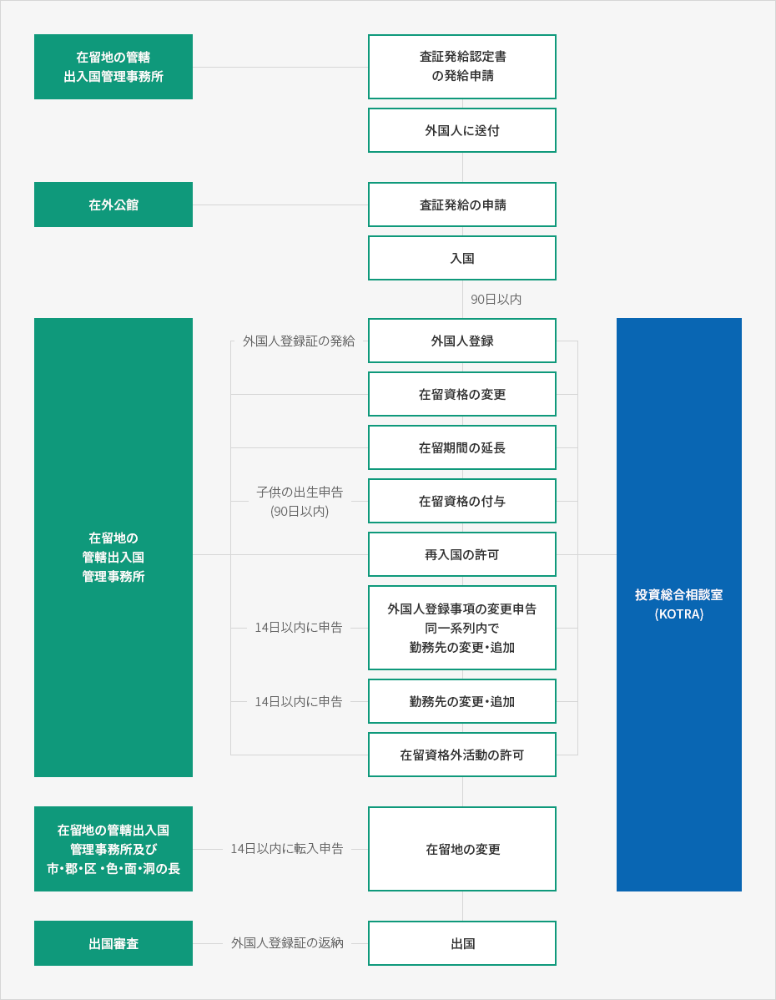

企業投資査証の発給及び在留手続き
- Home
- 投資開始
- ビザ・在留
- 企業投資査証の発給及び在留手続き


- 在留地の管轄出入国管理事務所
- 査証発給認定書の発給申請
- 外国人に送付
- 在外公館
- 査証発給の申請
- 入国-90日以内
- 在留地の管轄出入国管理事務所
- 外国人登録(外国人登録証の発給)
- 在留資格の変更
- 在留期間の延長
- 在留資格の付与(子供の出生申告– 90日以内)
- 再入国の許可
- 外国人登録事項の変更申告
- 同一系列内で勤務先の変更・追加(14日以内に申告)
- 勤務先の変更・追加(14日以内に申告)
- 在留資格外活動の許可
- 在留地の管轄出入国管理事務所及び市・郡・区・邑・面・洞の長
- 在留地の変更(14日以内に転入申告)
- 出国審査
- 出国(外国人登録証の返納)

査証発給
手続き
査証発給の権限は法務部長官にあるが、大統領令で範囲を定め、在外公館の長に委任することができる。これにより、外国人が入国するためには、査証を在外公館長に申請して発給を受ける方法、短期訪問査証保有者又は査証免除国の外国人の場合、入国後に出入国審査を経て在留資格と期間の付与を受ける方法、そして招請者の住所地の管轄地方出入国・外国人官署から査証発給認定書(又は認定番号)の発行を受けて在外公館に提示し、査証の発給を受ける方法がある。査証発給方法
- 在外公館長に査証を申請して発給を受ける。
在外公館長の査証発給範囲：法務部長官が委任した査証のみ可能であり、主に短期滞在査証である。 - 入国を希望する外国人が直接申請して発給を受けるか、韓国の招請者が本人の住所地の管轄出入国・外国人官署に申請して認定書又は発給番号を受ける。後者の場合、入国を希望する外国人が査証発給申請書に査証発給認定番号を記載して、在外公館長に提出することで査証の発給を受ける。
- 短期訪問査証を保有するか又は無査証で入国後、出入国・外国人官署で在留資格(D-8など)を変更する。
※ 査証発給認定申請書の認定有効期間 : 3ヵ月
外国人登録
91日以上の長期査証を所持して入国した外国人は、入国した日から90日以内にその住居地管轄の地方出入国・外国人官署に外国人登録を申請しなければならない。在留資格の変更
外国人がすでに承認された在留資格に該当しない他の活動をするためには、事前に在留資格変更許可を受けなければならない。変更許可を受けないまま在留資格に該当しない活動をして摘発されると、2千万ウォン以下の罰金に処されるか強制退去になることがある。変更時の届出事項
勤務先の変更
外国人が在留資格の範囲内でその勤務先を変更又は追加するためには、事前に勤務先の変更及び追加の許可を受けなければならない。ただし、専門的な知識・技術又は技能を有する者(E-1～E-7査証所持者)はその勤務先を変更又は追加した日から15日以内に届け出れば良い。勤務先の変更及び追加の許可を受けずに外国人を雇用又は斡旋して摘発されれば、1千万ウォン以下の罰金に処されるか強制退去になることがある。在留資格外活動
在留資格に該当する活動と並行して、他の在留資格に付随する活動をするためには、事前に在留資格外活動許可を受けなければならない。在留資格外活動許可に違反した場合は2千万ウォン以下の罰金に処されるか強制退去になることがある。住居地の変更
登録外国人がその住居地を変更した場合は、転入した日から14日以内に新しい住居地の市・郡・区の長又は邑・面・洞の長か、その住居地を管轄する地方出入国・外国人官署の長に住居地変更届を出さなければならない。届け出ない場合、100万ウォン以下の罰金に処される。外国人を雇用した企業主の届出義務
就業活動資格が与えられた外国人を雇用した者は、その外国人を解雇したり外国人が退職、死亡時、外国人の所在が分からなくなったとき、雇用契約の重要な内容を変更したときに、その事実を知った日から15日以内に地方出入国・外国人官署の長に届け出なければならない。届け出ない場合、200万ウォン以下の過料に処される。※ 出所：分かりやすい外国人雇用とビザ実務ガイド(パク・ギルナム、チョン・ボンス、江南労務法人刊行)